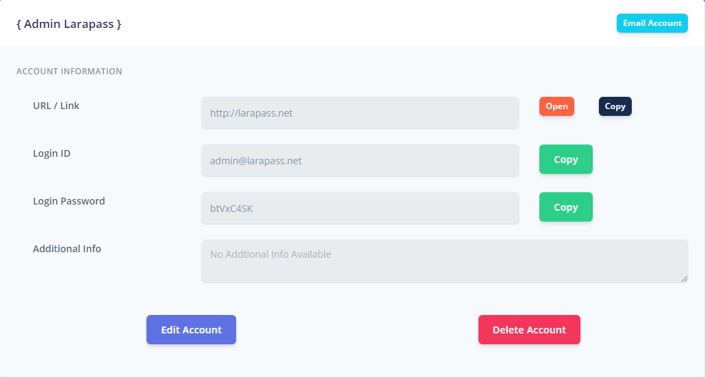

Vault
Vault in LaraPass v1 is where all the Folders, Accounts & their respective Notes are stored after being Encrypted.
Folders New
Users can add unlimited folders by clicking on the "Add Folder" button on the Accounts Page. Each folder can have a different icon and name.
Once the folder is created, users can add accounts to each folder by clicking on the top right folder icon on the account card.
{success} Folders can now be password protected.
Clicking on a Folder gives a pop-up with 2 options - Open Folder & Add Password - if the user adds a Password to a folder, the accounts added to that folder cannot be accessed without entering said password when accessing the folder.
{info} NOTE: Accounts added to Folders are now hidden from Global Search.
Users can remove password protection from a Folder by clicking on the "Remove Password" button once inside a particular folder.
Accounts
Here the user can store the link, login_id and the login_password along with any other details for any of their accounts used on/by any other services such as GMail Account, Facebook Account, Bank Account, etc
You can Add a New Account by clicking on the Add Account button on the Accounts Page.
Select a Category,
Add Link (with or without http://),
Enter Login ID,
Enter Login Password (or generate a unqiue one by clicking on "Generate"),
Add Additional Details (if any) &
Click on Add Account
The Account will be saved into the Vault and now on-display for the user on the accounts page.
You are provided with 2 options : Quick View and View Details
Quick View - Only the URL Link, Login ID and the Login Password for that account are showed in a pop-up.
Account Details - This opens a page with all the details of the Account including the Option to Edit Details or even Delete the Account.

Edit Account Details -